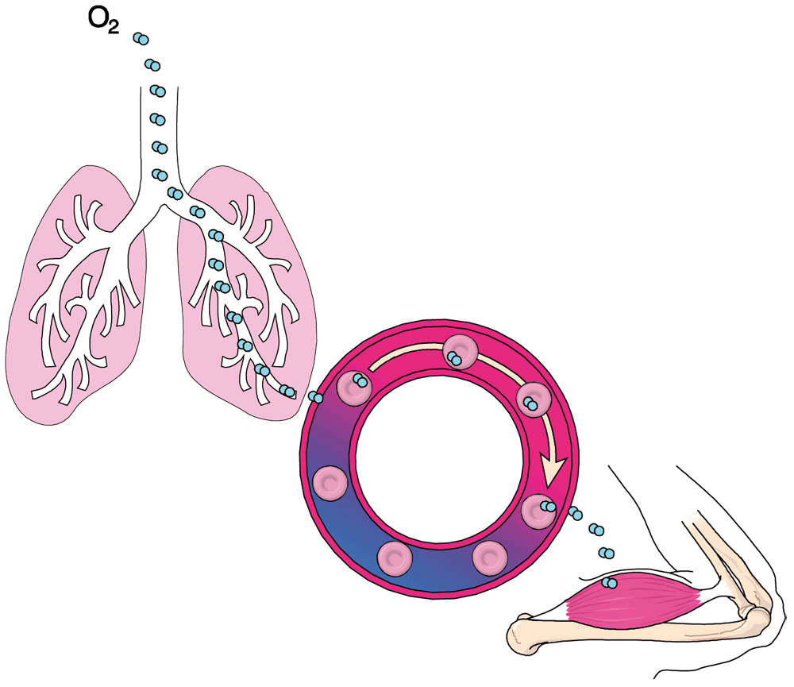

Oxygen Administration
Oxygen Administration
Oxygen is a colourless, odourless, tasteless gas that is essential for the body to function properly and to survive. The air that we breathe contains approximately 21% oxygen, and the heart relies on oxygen to pump blood. If not enough oxygen is circulating in the blood, it's difficult for the tissues of the heart to keep pumping. Supplemental oxygen is used to treat medical conditions in which the tissues of the body do not have enough oxygen.
Oxygen is a gas, but when administered as a supplement to normal atmospheric air, may also be considered a medication (or drug) in the way it is delivered.

Oxygen Transport from Lungs to Cells
The respiratory system
The anatomical features of the respiratory system involve those structures of the body that conduct air from outside the body to the lungs, and those elements that control and facilitate the process.
The Central Nervous System (CNS)
The brain and the spinal cord that make up the CNS and are the controlling mechanism.
The Upper Airway
The upper airway consists of those spaces and structures that assist and guide the movement of air from the nose and mouth to the 'wind pipe'.
Nasopharynx. ls the space behind the nose and extends over the roof of the mouth. It is into this cavity that air is initially drawn when a breath is taken and dry air is warmed and moistened prior to its journey to the lungs.
Oropharynx. Is the cavity that extends from the nasal cavity to the hyoid bone above the opening to the 'wind pipe'. This cavity contains the tonsils.
Laryngopharynx. Is the space immediately above the larynx. The Laryngopharynx includes the glottis, the opening between the larynx and the vocal cords.
Larynx. Also known as the 'Adam's apple', is the cartilaginous structure located above the entry to the lower airway and close to the oesophagus, the entry to the stomach.
Lower Airway
Trachea. Is a thin-walled tube approximately the same diameter as a garden hose. The trachea extends to the bronchial tree where the airway branches to the lungs.
Bronchi and bronchioles. The trachea branches into the left and right main bronchi, which successively branch into smaller bronchi, much like the structure of the branches of a tree. These smaller bronchi are located within the lobes of the lungs.
Lungs. The two lungs develop at the end of the bronchi, and are contained within a cavity in the chest. The lungs are porous elastic organs that appear similar to a sponge.
Lobes. Each lung is composed of compartments called lobes; the right lung with three lobes, the left, two.
Alveoli. In the extremities of the lobes, groups of respiratory bronchioles terminate in clusters of structures called alveoli. The alveoli are small sacs composed of elastic tissue, covered by a thin membrane. It is through this membrane that gas exchange takes place.
Oxygen Exchange in the Lungs
Associated muscles
Diaphragm. A long, flat, smooth muscle attached to the lower six ribs, the sternum and the spine. When relaxed it is convex in shape, forming a 'dome' beneath the lungs. When the CNS stimulates the need for inhalation, the diaphragm flattens, enlarging the chest cavity and allowing expansion of the lungs.
Intercostal muscles. The intercostal muscles are the small smooth muscles between the ribs. When contracted, these muscles expand the chest cavity in an outward direction, providing an enlargement of the chest cavity.
Associated blood structures
Red blood cells. Red blood cells, or erythrocytes, are the most numerous and specialised cells in the body.
Erythrocytes are flexible concave microscopic discs, adapted to produce haemoglobin.
Erythrocytes circulate through the lungs in the alveolar capillaries, collecting oxygen diffused through the membranes of the alveoli.
Haemoglobin is a hormone which attracts and binds oxygen, and to a lesser extent, carbon dioxide. It has a red pigment which gives blood its red colour. When oxygen combines with haemoglobin, it is known as oxyhaemoglobin, and the enriched blood is a bright red colour. As carbon dioxide does not combine with haemoglobin as effectively, the resultant colour of the blood is dark red.
Respiration
The physiology (or function) of respiration involves all those anatomical features discussed previously. Respiration can be considered to start with the process of inhalation, or 'breathing in'.
At the start of each breath, our CNS is stimulated to direct the muscular diaphragm below the lungs to contract. As it contracts, or 'flattens', the chest cavity is enlarged. Because at this point the lungs are deflated, the pressure in them is low. As the air outside our body is at atmospheric pressure (14.7 psi, or 100 kPa), it spontaneously moves into the lungs through the oropharynx to 'even up the pressure'.
The air that has been inhaled moves through the upper and lower airways to the membranes of the lungs, into the alveoli.
At this point, the oxygen content of the air is selectively moved through the walls of the alveoli.
Respiration occurs regularly, depending on the body's demands. An adult awake and at rest will generally have a respiratory rate of 14-18 breaths per minute. When the body is under stress, either physical or emotional, the rate rises accordingly, and could be as high as 30 per minute. When deeply asleep, with the body completely at rest, the body's respiratory rate is somewhat slower, eg 10-12 per minute.
Expiration and Inspiration of the Lungs
Oxygen therapy
Oxygen therapy is a treatment that provides extra oxygen to the tissues of the body through the lungs, and is provided to a casualty as a supplement to normal respiration. Certain injuries and conditions lead to a loss of ability to maintain oxygen to the body at the required level.
Oxygen therapy provides a regulated flow of supplementary oxygen to 'build up' to the necessary level. Oxygen therapy is usually delivered by a face mask, but nasal prongs can also be used.
Face masks. These are adult or child sized plastic disposable items which fit over the casualty's nose, mouth and chin. They are attached to the regulating device outlet by clear plastic tubing.
Oxygen delivered via a face mask mixes with air drawn in through holes in the body of the mask. Expired air is exhausted through the holes when the casualty exhales. The percentage of oxygen administered depends on the flow rate from the outlet.
The main disadvantages are that the casualty may feel claustrophobic, and that speech is distorted through the mask.
Nasal prongs. These are plastic prongs set within a length of clear plastic tubing, and are designed to fit into the casualty's nostrils. The disadvantage is that a blocked nose, sinusitis, or a cold sometimes negates the benefits and delivers only low concentrations of oxygen.
100% oxygen
100% oxygen is administered to casualties in respiratory arrest or whose unsupported breathing is insufficient to maintain consciousness.
Demand valve devices. 100% oxygen is delivered from the regulating device directly to a demand valve. A firmly fitting, sealed mask is attached to the demand valve. When the casualty breathes, the demand valve is triggered, and a measured amount of 100% oxygen is delivered.
Manually triggered devices. On some mechanical devices, the demand valve can be triggered by an operator and oxygen can be administered to a non-breathing casualty.
Soft bag and mask devices. These devices consist of a soft bag and reservoir attached to a mask. 100% oxygen is delivered into the bag via the reservoir, and the bag is compressed to administer oxygen to the casualty through the mask.
The disadvantage of these devices is the care required to continually assess the casualty. It is easy to inflate the casualty's stomach, or worsen chest and lung injuries or conditions.
Suction
Suctioning uses a manual or powered vacuum device to remove foreign materials or fluids from the casualty's airway.
Problems often occur secondary to prolonged suctioning where secretions and inspired oxygen are removed and could result in the low oxygenation and damage to the soft membranes of the mouth.
Suction catheters come in two main types:
Yankauer sucker. A one-size rigid plastic tube that is useful in removing large quantities of matter or fluids. Caution should be used with this piece of equipment to avoid damage to the patient's mouth area.
Y-suction catheter. Flexible plastic tubing that comes in various sizes. It is unable to remove large quantities of matter or fluids and it is easily blocked. The advantage is that it is soft and flexible.
Care in the use of oxygen
Although oxygen is beneficial, care is essential in administering it.
Due to the skill required to use the above devices, they should be restricted to those providers who are trained and qualified and used in accordance with the level of training.
Oxygen for medical use
Medical oxygen is stored under pressure (up to 13,400 kPa) in steel or aluminium cylinders and can be identified using the following features.
 Australian standard pin index valve for oxygen equipment
Australian standard pin index valve for oxygen equipment
 Black cylinder with white collar
Black cylinder with white collar
 The cylinders should be labelled 'Medical Oxygen'
The cylinders should be labelled 'Medical Oxygen'
Common cylinder sizes are:
 'B' – 200 litres when full
'B' – 200 litres when full
 'C' – 400-490 litres when full
'C' – 400-490 litres when full
 'D' – 1500 litres when full
'D' – 1500 litres when full
 'G' – 7600 litres when full
'G' – 7600 litres when full
Oxygen cylinders from different companies often hold slightly different quantities of gas. The most common sizes for mechanical resuscitators are the 'B' and 'C', and fixed oxygen equipment normally use 'D' size cylinders or larger.
Preparing a cylinder for use
A full cylinder should have a plastic stopper inserted in the valve outlet, or if a smaller cylinder, plastic tape wound around the outlet.
When preparing a cylinder for use:
 check the external condition and colour of the cylinder
check the external condition and colour of the cylinder
 check the valve and outlet port, and wipe them clean
check the valve and outlet port, and wipe them clean
 remove the plastic stopper or tape,and check for moisture in the outlet port
remove the plastic stopper or tape,and check for moisture in the outlet port
 point the cylinder away from you and 'crack' the valve for one second
point the cylinder away from you and 'crack' the valve for one second
 ensure the valve is turned off tightly
ensure the valve is turned off tightly
Oxygen delivery
The gas is delivered through a valve to a regulating device which reduces the pressure to a safe 390-400 kPa. The oxygen flow is then delivered through a 'yoke' device that fits onto the valve stem of the cylinder. The yoke has fittings that match the valve stem, and has a measuring device attached to control the flow of oxygen.
Flow rates of oxygen are varied by either a fixed flow outlet set between 3-8 litres per minute (lpm), or by an adjustable flow meter that delivers between 1-25 lpm. This is consistent with the requirements for supplementary oxygen therapy. Full flow rates of oxygen are supplied directly to a demand valve in the case of a mechanical resuscitator.
When delivering oxygen via a therapy mask you can expect 30 minutes at 15lpm from a full 'C' cylinder (440 Litres).
Connecting oxygen equipment
When the selected cylinder has been prepared, connect the equipment as follows:
 attach the appropriate yoke device, ensuring that the valve fittings correspond to those on the valve stem
attach the appropriate yoke device, ensuring that the valve fittings correspond to those on the valve stem
 tighten the locking screw gently with a cylinder spanner (larger cylinders), or 'finger tight' (smaller cylinders)
tighten the locking screw gently with a cylinder spanner (larger cylinders), or 'finger tight' (smaller cylinders)
 attach appropriate oxygen therapy or mechanical resuscitator devices
attach appropriate oxygen therapy or mechanical resuscitator devices
Cylinder storage
Store oxygen cylinders carefully in accordance with relevant government regulations. Prior to storing cylinders, you should contact your company or organisation's OH&S representative for direction and advice.
Some important points are:
 cylinders should be kept cool, dry and undercover
cylinders should be kept cool, dry and undercover
 all cylinders should be kept in a secure but accessible area near the oxygen equipment
all cylinders should be kept in a secure but accessible area near the oxygen equipment
 cylinders should be contained or secured to prevent movement and precautions should be taken to prevent them falling over
cylinders should be contained or secured to prevent movement and precautions should be taken to prevent them falling over
 the storage area should be out of direct sunlight and away from heat
the storage area should be out of direct sunlight and away from heat
 full and empty cylinders should be clearly marked and kept stored separately
full and empty cylinders should be clearly marked and kept stored separately
 the storage area should have the regulation signage
the storage area should have the regulation signage
 there should be no naked flames or smoking allowed within 25 metres of stored oxygen cylinders
there should be no naked flames or smoking allowed within 25 metres of stored oxygen cylinders
 empty cylinders should be returned for filling without delay
empty cylinders should be returned for filling without delay
 DO NOT store near grease or oil
DO NOT store near grease or oil
Safety with oxygen
 always check that the cylinder is clean
always check that the cylinder is clean
 ensure that the cylinder is black with white shoulders
ensure that the cylinder is black with white shoulders
 always use the correct yoke with pressure gauges
always use the correct yoke with pressure gauges
 ensure that the bodock seal ('O' ring) and valve seat are clean and undamaged
ensure that the bodock seal ('O' ring) and valve seat are clean and undamaged
 store cylinders upright and secure
store cylinders upright and secure
 adhere to Government regulations regarding the storage of oxygen cylinders
adhere to Government regulations regarding the storage of oxygen cylinders
 store full and empty cylinders separately. Mark empty cylinders clearly
store full and empty cylinders separately. Mark empty cylinders clearly
 ensure that you are qualified prior to using oxygen equipment
ensure that you are qualified prior to using oxygen equipment
 DO NOT drop or roll cylinders
DO NOT drop or roll cylinders
 DO NOT completely empty a cylinder - leave pressure in the cylinder to prevent moisture entering
DO NOT completely empty a cylinder - leave pressure in the cylinder to prevent moisture entering
 DO NOT expose cylinders to extreme heat or flame as oxygen aids combustion
DO NOT expose cylinders to extreme heat or flame as oxygen aids combustion
 DO NOT smoke near oxygen equipment
DO NOT smoke near oxygen equipment
 DO NOT use petroleum based oil or grease products near oxygen equipment
DO NOT use petroleum based oil or grease products near oxygen equipment
Checking oxygen equipment
Oxygen equipment should be checked regularly for cleanliness and contents.
Daily Maintenance and after each use
 ensure that all supplies and spares, such as oxygen masks and seals are available and undamaged
ensure that all supplies and spares, such as oxygen masks and seals are available and undamaged
 check the contents of the cylinder and replace as necessary
check the contents of the cylinder and replace as necessary
Weekly Maintenance and after each use
 inspect the exterior and connector sockets for cracks and signs of damage
inspect the exterior and connector sockets for cracks and signs of damage
 check the contents of the cylinder and replace as necessary
check the contents of the cylinder and replace as necessary
After each use
 ensure that all supplies and spares, such as oxygen masks, suction tubing and suckers and seals are available and undamaged
ensure that all supplies and spares, such as oxygen masks, suction tubing and suckers and seals are available and undamaged
 check the contents of the cylinder and replace as necessary
check the contents of the cylinder and replace as necessary
 clean the unit
clean the unit
 replace the masks and airways as necessary
replace the masks and airways as necessary
The minimum contents of a portable resuscitation unit should be:
 oxygen cylinder not less than half full
oxygen cylinder not less than half full
 regulator and flow meter (regulator may incorporate the flow meter)
regulator and flow meter (regulator may incorporate the flow meter)
 oxygen therapy mask
oxygen therapy mask
 adult
adult
 child
child
 oxygen therapy tubing
oxygen therapy tubing
 resuscitation mask
resuscitation mask
 adult
adult
 child
child
 oxygen cylinder key-wheel
oxygen cylinder key-wheel
 spare bodock seal
spare bodock seal
Additional supplies may include:
 suction unit (manual or oxygen powered)
suction unit (manual or oxygen powered)
 oropharyngeal airways sizes 1– 4
oropharyngeal airways sizes 1– 4
Oropharyngeal airway
An oropharyngeal airway is a plastic or compound device, shaped in a curve and designed to fit into a casualty's mouth over the tongue to establish and maintain an open airway.
The oropharyngeal airway should be used on an unconscious casualty without a 'gag reflex', and is essential when using a mechanical resuscitator.
Prior to inserting the airway, take care to ensure the airway is clear of any obstruction such as vomitus, water, etc. Ensure that the correct size airway is inserted, and should the casualty 'gag', or attempt to reject the airway, remove it immediately.
Method of Insertion
 select the correct size airway by measuring the airway from the point of the ear to the chin
select the correct size airway by measuring the airway from the point of the ear to the chin
 hold the casualty's mouth open, and with the airway curve towards the nose, insert it to approximately half its length
hold the casualty's mouth open, and with the airway curve towards the nose, insert it to approximately half its length
 rotate the airway 180 degrees, and push gently so that it clears the tongue
rotate the airway 180 degrees, and push gently so that it clears the tongue
 the lip of the airway should be external to the casualty's lips
the lip of the airway should be external to the casualty's lips
 ensure that the casualty's head is extended, and that no soiling of the oropharynx has occurred
ensure that the casualty's head is extended, and that no soiling of the oropharynx has occurred
Administering oxygen
By Face Mask
 reassure the casualty
reassure the casualty
 explain the need for oxygen therapy
explain the need for oxygen therapy
 explain that the oxygen mask will assist with breathing
explain that the oxygen mask will assist with breathing
 turn on oxygen
turn on oxygen
 select mask (adult or child)
select mask (adult or child)
 connect oxygen tubing to mask
connect oxygen tubing to mask
 connect oxygen tubing to flowmeter
connect oxygen tubing to flowmeter
 turn on flowmeter to appropriate rate (lpm)
turn on flowmeter to appropriate rate (lpm)
 place mask comfortably over casualty's face covering the mouth and nose
place mask comfortably over casualty's face covering the mouth and nose
 adjust straps
adjust straps
 adjust metal strip over nose
adjust metal strip over nose
 continue to reassure the casualty
continue to reassure the casualty
 continue to observe the casualty
continue to observe the casualty
By Nasal Prongs
 reassure the casualty
reassure the casualty
 explain the need for oxygen therapy
explain the need for oxygen therapy
 explain that the prongs will assist with breathing
explain that the prongs will assist with breathing
 turn on oxygen
turn on oxygen
 select appropriate size nasal prongs
select appropriate size nasal prongs
 connect oxygen tubing to flowmeter
connect oxygen tubing to flowmeter
 turn on flowmeter to appropriate rate (lpm)
turn on flowmeter to appropriate rate (lpm)
 place tips into casualty's nostrils
place tips into casualty's nostrils
 place tubing over and then under casualty's ears
place tubing over and then under casualty's ears
 adjust for comfort
adjust for comfort
 secure tubing to casualty's clothing
secure tubing to casualty's clothing
 continue to reassure the casualty
continue to reassure the casualty
 continue to observe the casualty
continue to observe the casualty
By Bag and Mask
 turn on oxygen
turn on oxygen
 select appropriate size resuscitation mask
select appropriate size resuscitation mask
 connect oxygen tubing to resuscitation bag oxygen inlet
connect oxygen tubing to resuscitation bag oxygen inlet
 connect oxygen tubing to flowmeter
connect oxygen tubing to flowmeter
 turn on flowmeter to appropriate rate (10 lpm)
turn on flowmeter to appropriate rate (10 lpm)
 place mask over casualty's face covering the mouth and nose
place mask over casualty's face covering the mouth and nose
 hold the mask firmly in place, ensuring a good seal
hold the mask firmly in place, ensuring a good seal
 maintain head tilt and jaw lift
maintain head tilt and jaw lift
 squeeze the resuscitation bag until the casualty's chest rises, then release (2 seconds)
squeeze the resuscitation bag until the casualty's chest rises, then release (2 seconds)
 continue to observe the casualty for airway secretions and obstructions
continue to observe the casualty for airway secretions and obstructions
Resuscitation using a bag and mask is a two person procedure, with one person holding the mask and the second person squeezing the bag.
Manual suction
 turn casualty on to side if possible
turn casualty on to side if possible
 prepare suction unit
prepare suction unit
 install an unused container into the suction device
install an unused container into the suction device
 remove the protective cap from the tip of the suction catheter
remove the protective cap from the tip of the suction catheter
 spread the victim's teeth using the cross-finger technique
spread the victim's teeth using the cross-finger technique
 with the other hand insert the catheter into the victim's mouth toward the back of the throat
with the other hand insert the catheter into the victim's mouth toward the back of the throat
 insert the catheter only as far as the base of the tongue
insert the catheter only as far as the base of the tongue
 squeeze the suction handle and hold it until suction stops
squeeze the suction handle and hold it until suction stops
 repeat the handle squeeze as needed
repeat the handle squeeze as needed
 return to ventilations as soon as possible
return to ventilations as soon as possible
 suction only the mouth
suction only the mouth
 DO NOT suction for more than 15 seconds at a time
DO NOT suction for more than 15 seconds at a time
 DO NOT place the catheter tip any farther than the base of the tongue.
DO NOT place the catheter tip any farther than the base of the tongue.